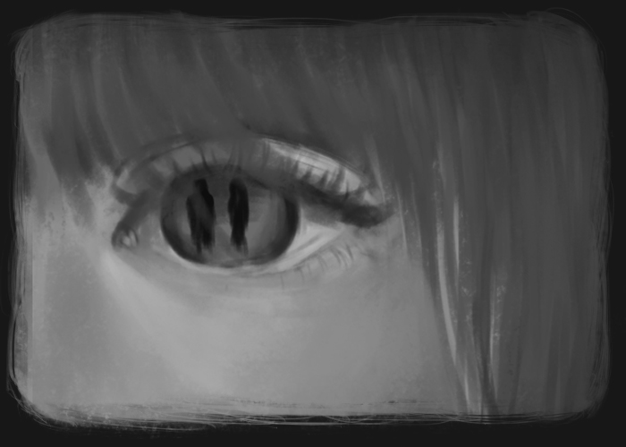
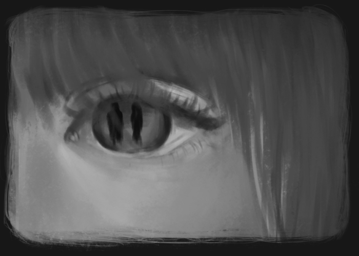

“Be quiet, Gretel,” said Hansel, “and don’t worry. I know what to do.”
And as soon as the adults had fallen asleep, he got up, pulled on his jacket, opened the lower door, and crept
outside.
The moon was shining brightly, and the white pebbles in front of the house were glistening like silver
coins.
Gretel ran to wake her brother, she cried bitter tears and said to Hansel, “It is over with us!”


Hansel bent over and filled his jacket pockets with them, as many as would fit.

Then he went back into the house and said, “Don’t worry, Gretel. Sleep well. God will not forsake us.” Then he went back to bed.

At daybreak, even before sunrise, the woman came and woke the two children. “Get up, you lazybones. We are going into the woods to fetch wood.” Then she gave each one a little piece of bread, saying, “Here is something for midday. Don’t eat it any sooner, for you’ll not get any more.”

Gretel put the bread under her apron, because Hansel’s pockets were full of stones. Then all together they set forth into the woods. After they had walked a little way, Hansel began stopping again and again and looking back toward the house.

The father said, “Hansel, why are you stopping and looking back? Pay attention now, and don’t forget your
legs.”
“Oh, father, i” said Hansel, “I am looking at my white cat that is sitting on the roof and wants to say good-bye
to me.”
The woman said, “You fool, that isn’t your cat. That’s the morning sun shining on the chimney.”
However, Hansel had not been looking at his cat but instead had been dropping the shiny pebbles from his
pocket onto the path.

When they arrived in the middle of the woods, the father said, “You children gather some wood, and I will make a fire so you won’t freeze.”

Hansel and Gretel gathered together some twigs, a pile as high as a small mountain
The twigs were set afire, and when the flames were burning well, the woman said, “Lie down by the fire and rest. We will go into the woods to cut wood. When we are finished, we will come back and get you.”
 

Hansel and Gretel sat by the fire. When midday came each one ate his little piece of bread. Because they could hear the blows of an ax, they thought that the father was nearby. However, it was not an ax. It was a branch that he had tied to a dead tree and that the wind was beating back and forth. After they had sat there a long time, their eyes grew weary and closed, and they fell sound sleep. When they finally awoke, it was dark at night. Gretel began to cry and said, “How will we get out of woods?” Hansel comforted her, “Wait a little until the moon comes up, and then we’ll find the way.” After the full moon had come up, Hansel took his little sister by the hand. They followed the pebbles that glistened there like newly minted coins, showing them the way. They walked throughout the entire night, and as morning was breaking, they arrived at the father’s house.